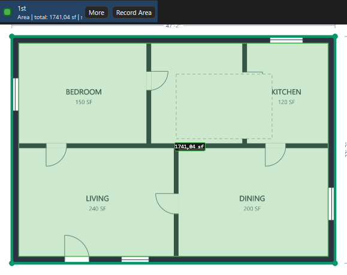
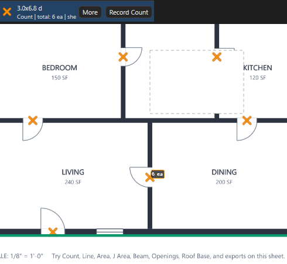
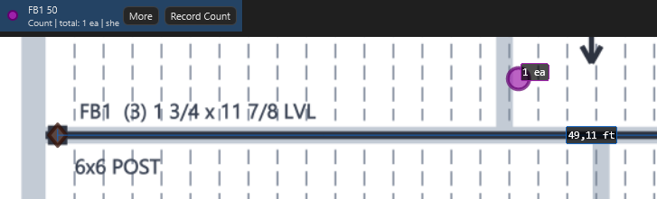
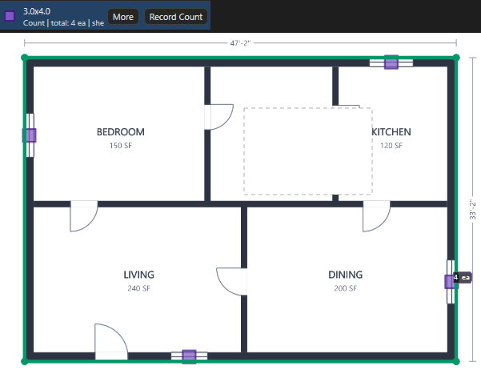

Measuring tools¶
Here: the bottom strip tools in order of how often they are used, their keys, step-by-step tasks, and what appears in the tree. Needed every day; topic rules (what exactly to trace) live on the pages of the "Work" section. Editing finished measurements, Cut, Merge, Split, Similar and the Snap, Ortho, Box snaps: Editing and snaps.

Value and Excel buttons.General rules¶
- A tool button (
L,A,P,J,B,O) creates a new takeoff: theNew Takeoff Itemdialog opens with the name, color and a preview of the destination folder. To continue an existing takeoff: select it and pressSpace(Record). - Drawing: a click places a point,
Cfinishes,Esccancels an unfinished shape,Ctrl+ZorBackspaceremoves the last point. Snaps to the drawing and to the axes (F3,Ctrl+F3,F8,F9) are off in a regular measurement: Editing and snaps. - The status bar shows
Mode: Record <takeoff>andTakeoff: <takeoff>andRoute: W 1st floor: what you are drawing and where it will go. - Without a sheet scale, Line and Area are not created (scale).
- The right mouse button always pans the sheet, the wheel zooms,
Ffits the sheet to the window.
Tool table¶
| Button | Key | What it does | What appears in the tree |
|---|---|---|---|
Line |
L |
a polyline along a wall or detail centerline, linear feet | a Line takeoff, LFT |
Area |
A |
a closed outline, square feet; F9 box by two corners |
an Area takeoff, SF |
Count |
P |
a point per symbol, pieces | a Count takeoff, ea |
J Area |
J |
a joist area with direction and spacing | a Joist Area takeoff: pieces and LFT |
Beam |
B |
beam length between supports, one point per beam | a Count takeoff with the length in the name |
Open |
O |
a box around an opening, a point in the center | a Count takeoff WxH |
Scale |
S |
sheet scale from a known dimension | - |
Ruler |
R |
a tape dimension on the sheet with no quantity; the dot on the button (Ruler Sheet Visibility) hides the sheet's rulers |
markup |
Pitch |
- | roof pitch rise:12 from two points; in the palette, the Pitch Tool command |
markup |
Select |
E |
select and edit measurements; Ctrl+C / Ctrl+V |
- |
Pan |
V |
pan the sheet | - |
Cut, P Line, Similar, Repeat, Merge, Split, Break, Ends, Combine, Transform |
X, Ctrl+M, Ctrl+Shift+M, Ctrl+Shift+B |
editing finished measurements and takeoffs, finding similar symbols, segment series | Editing and snaps |
Snap, PDF, Ortho, Box |
F3, Ctrl+F3, F8, F9 |
snaps: to your own points, to the drawing, to the axes, by two corners | Editing and snaps |
The Value and Excel buttons on the right write the selected takeoff into the open Excel workbook: Export to Excel. The Link to Excel button next to them keeps the takeoff's number in a cell and updates it by itself: Link to Excel. The Auto Link button on the DFL links all takeoffs at once whose numbers are already in the J:L list: Auto Link.
How to draw a wall: Line¶
ext 2x6 9.09, route line walls/1st floor walls, clicks along the exterior wall centerline and C.
ext 2x6 9.09: purpose, size, height in feet. Disconnected runs are separate measurements of one takeoff.Why: linear feet of everything counted by length: walls, BW, shear walls, eve and rake, truss heel, parapets, ledger and rim in details. You need: a sheet with a scale and a W, F or S dot.
- Press
L(theLinebutton). - Type the name following the pattern
<purpose> <size> <height>:ext 2x6 9.09,corr 2x6 11.7,eve 24 main,prpt 6.4 5.3 0.5 par. Read the destination line and press OK. - Click along the wall centerline corner by corner.
- Press
C: the run is closed, Record is on. - Draw the next run of the same takeoff;
Spacestops Record. - For a new height or size press
Lagain: that is a new takeoff, not a continuation.
Result: with the W dot the takeoff is in walls/<floor> floor walls, with F in framing/<floor> framing/details, with S in shear walls/<floor>/shear; names with eve, rake, prpt, trussheel, gable go to their own roots from any sheet. Total shows LFT.
Rules: Exterior, Bearing Walls, Shear Wall, Eve, Parapet, Truss Heel.
How to take off an area: Area¶
1st floor outline and C; then X (Cut) with F9 (Box) cuts a bathroom out of the area.
Cut, not with a second outline.Why: SQFT of floors, balconies and porches, roof planes, gables, facade sheathing. You need: a sheet with a scale.
- Press
A(theAreabutton), type the name1st,blcny,rf 6,gableorsiding/6" vertical, OK. - Trace the outline corner by corner;
Ccloses it. For a rectangle pressF9and click two corners. - For a hole inside (shaft, open to below) press
Xand trace the cutout inside the area. - For two overlapping areas, select both with the Select tool and choose Combine > Remove Overlap (editing).
Result: with the W dot the takeoff is in sqfts, with F in framing/<floor> framing/joists (for joists use J Area, not Area), with S in shear; Total in SF.
Rules: SQFT 1st, 2nd, Roof, Gable, Wall Sheathing.
How to count pieces: Count¶
HDU5 SB5x24, four points at the ends of shear walls; total 4 ea.
Why: posts, holdowns, hardware, anything counted in pieces.
- Press
P(theCountbutton), type a name by mark or model:C4 20,HDU11 SB1x30 S2.2,MPB88Z S2.1,int H228 4. - Pick the point icon in the
Count displayfield (circle, cross, square, star, triangle, diamond, ring) and press OK. The app remembers the chosen icon and offers it for the next new Count. - Click the center of each symbol; for a holdown, at the end of the shear wall.
- Missed: press
E, drag the point, orDelete. - To add points to a finished takeoff later, right-click it in Takeoffs and choose
Add Count(for Line and Area this item is calledNew Section), or select it and pressSpace.
Result: with the W dot the takeoff is in walls/<floor> floor walls, with F in the root of framing/<floor> framing (posts and headers are later moved into posts and headers/ext|int), with S in shear walls/<floor>/holdowns; Total in pieces. In the Templates panel the same Add Count item creates not a takeoff but a Count preset in the template tree (Templates).
Rules: Post, Holdowns, Headers.
How to count joists: J Area¶
2x10 16", floor framing outline and the joist direction line; the app counts pieces and linear feet.
Why: joist or rafter pieces and lengths by area without counting by hand. You need: a structural plan with the F dot and a scale.
- Press
J(theJ Areabutton), type the name<size or series> <spacing>:2x8 16",11 7/8 TJI 16", OK. - Trace the area,
C. - Draw the direction line along the joists when the app asks;
Shiftkeeps the direction orthogonal. - Open
Propsand check the spacing, end joists, doubled joists. A hole in the area:X. - For extra joists under walls, select the area and press
D(Extra Joists). - If needed, turn on the
Detailed area labelcheckbox inProps(order and net lengths in a table on the sheet) andMove joist note(the table can be dragged with the Select tool,Ctrl+Zundoes the move; the position is saved and printed in the PDF).
Result: with the F dot the takeoff is in framing/<floor> framing/joists; Total shows pieces and LFT. A change of direction, spacing or material means a new area. A plain Area named 2x8 16" will not give joists in Excel.
J Area right-click menu¶
These items are in the menu of the area on the sheet (some of them also in a separate sheet window), in the menu of a section under the takeoff, and in the Joist submenu of the takeoff in Takeoffs. Needs the Advanced Takeoff Tools module (on).
| Item | What it does | When you need it |
|---|---|---|
Use Area As Joists... |
on a plain Area opens Takeoff Item Properties: the Joist layout checkbox turns the takeoff into a J Area (Joist type, O.C. spacing (in), pitch, length rounding). On a J Area the same item is called Joist Properties... |
the area was drawn with a plain Area, but joists need to be counted |
Set / Reset Joist Direction |
sets the direction of one area again: draw a two-point line along the joists | the direction came out crosswise |
Set Direction for All Areas |
one direction line on the selected area sets the same direction for all areas of the takeoff on all sheets; status Joist direction ... applied to N areas |
all areas of the takeoff run the same way |
Refresh Regular Joists in All Area Segments |
carries the takeoff's common properties (type, spacing, Default far-edge joist) over to all areas and recalculates the regular joists; for areas without their own direction the app asks you to draw a line, one by one. End joists set on the sheet are kept |
after changing the spacing or type in Props |
Start Extra Joists Mode (D) |
the same as D: clicks inside the area place Extra Joists, D or Esc exits; available when the area's direction is set |
extra joists under walls |
Delete Nearest Extra Joist |
deletes the extra joist under the cursor (right-click exactly on its line); a miss gives the status Right-click directly on an Extra Joist to delete it., Ctrl+Z brings it back |
an unneeded Extra Joist |
Rules: Joist.
How to measure a beam: Beam¶
FB1; the app adds the length to the name: FB1 52.
FB1 typed over Beam: the 49,11 ft from the ruler went into the name already rounded, Count takeoff FB1 50, the first mark above the beam.Why: beams and headers with the order length in the name, which Excel reads.
- Press
B(theBeambutton) and draw from support to support. - Type the mark or size in the dialog:
FB1,(2) 1 3/4 x 18 LVL,ext H228; the app adds the order length in feet. Press OK. - For a second identical beam, select the takeoff, press
Spaceand place another point. - For a series of beams in a row, press the
Repeatarrow next to the Beam button: each beam is drawn with two points untilEsc.
Result: a Count takeoff with a point on the beam and the length in the name (FB1 14), with the F dot in framing/<floor> framing/beams. The tool does the rounding: up to 8' it rounds up to a whole foot, over 8' up to an even number (8.3 gives 10, 13.2 gives 14). Do not add feet by hand, and do not put (n) together with n points.
How to count openings: Openings¶
4.0x4.0, the other windows with one click each; total 4 ea.
3.0x4.0 on the demo plan: a point on every window, 4 ea. Openings makes such a takeoff from a box around the opening on an elevation: the size name, a point in the center.Why: windows, doors, garage doors with the size in the name, one point per opening.
- Press
O(theOpenbutton) and click two corners of a box around the opening. - Type the name
<width>x<height>in decimal feet with one decimal place:4.3x7.8; suffixddoor,gdgarage door,lvlouver. Different marks of the same size = one takeoff. Press OK. - Repeat for each opening; showing up on both the plan and the elevation does not double it: one point per opening.
Result: a Count takeoff in openings from any sheet except U; the floor is the folder openings/<0|1|2|roof>, takeoffs are moved into it by hand.
Rules: Windows and Doors.
Other tools and buttons¶
| Tool | When and how |
|---|---|
Pitch |
roof pitch from a section: two points along the roof plane, the result rise:12 for the name rf 6. The Pitch button is in row 1 next to Ruler; in the Ctrl+Shift+P palette the same command is called Pitch Tool, it has no shortcut |
Ruler (R) |
checking the scale and dimensions; gives no quantity |
Ruler Sheet Visibility |
the small dot on the Ruler button: hides the rulers already on this sheet (new rulers stay visible); pressing again shows them all. Handy when rulers were placed only to check the scale and get in the way of reading the sheet |
Ruler screen thickness |
the Ruler slider on the Viewport ribbon, RULER / EXTRA group: on-screen thickness of ruler and Pitch lines, 0.5-6 px (default 1); a field next to it for an exact number |
Scale: and Set |
the scale field in row 2 of the strip: type 1/8" = 1'0" or 1:96 and press Set (or Enter). The scale is written to the current sheet, its measurements are recalculated; Presets gives typical values (scale) |
Reset Rotate Selection |
the button with a circular arrow to the right of the Rot slider: returns the slider to zero, the selection stays rotated; the next rotation counts from the new position (Transform) |
Expand all Pages nodes, Expand all Takeoffs nodes |
icons above the Pages and Takeoffs trees expand all folders, the icon next to them collapses. The same commands are on the icon strips at the edges of the sheet: Expand Pages Tree on the left, Expand Takeoffs Tree on the right |
Record (Space) |
continue the selected takeoff; Space again stops it (Record) |
Cut, P Line, Similar, Repeat, Combine, snaps Snap / PDF / Ortho / Box |
cutouts, points along a line, similar symbols, segment series, overlapping areas, snaps to the drawing: Editing and snaps |
Editing measurements in brief¶
E: a click selects a measurement, a box selects several;Deletedeletes;Ctrl+Zundoes.Ctrl+C/Ctrl+Vmove measurements to another sheet: copying.- Vertices,
Transform(mirror, rotate, scale the selection),Merge,Split,Break,Ends,Combine: Editing and snaps.
See also¶
- Takeoffs tree: Record, building root, copying
- Editing and snaps: Cut, Merge, Split, Break, Similar, Snap
- Names and auto-routing: why a takeoff landed in this folder; split by sheets
- Workflow: takeoffs in order, Common mistakes